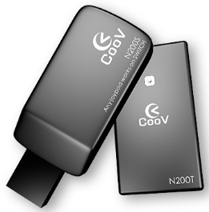
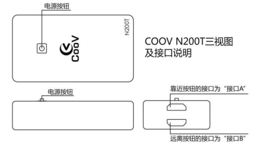

请升级至最新5.x固件，以获得完整功能
* V5.4
产品BUG反馈：论坛
N200由N200S、N200T两部分组成，其中N200T是以N100为基础，扩展了六轴和无线功能；N200S是一个无线收发器，用于连接主机与N200T。


1. 点击下载最新固件V3.4，解压，进入N200T文件夹
2. 确认N200T出于关机状态，且不要连手柄，把N200T的接口A连接电脑，我的电脑中会出现一个U盘，将N200T文件夹下的firmware.bin复制到N200T U盘中，选择覆盖即可。U盘会自动弹出，并重新连接，更新成功。
3. 在NS主机系统设置中，把Pro Controller Wired Communication选项置为ON，并 重启 NS主机
4. 把N200S连上NS主机
5. 把N200T连上手柄，开机使用
当N200T单独使用时，可以具备N100的所有功能。其中接口A用于连接主机，接口B用于连接手柄。此模式的使用方式与N100相同，但连接前务必先 关机。
N200S、N200T通过模拟U盘的方式进行固件更新，新固件可以在官网、QQ群(486965394)、Wiki中获得。
接口B，再把接口A连到电脑上N200T固件目录下的firmware.bin复制到N200T U盘中，选择覆盖即可。更新成功后，N200T绿灯 （部分批次为蓝灯） 亮起，并自动重新连接电脑。（某些情况下，电脑会提示写入失败，但实际已完成更新）N200S固件目录下的firmware.bin复制到N200S U盘中，选择覆盖即可。更新成功后，N200S自动重新连接电脑。（某些情况下，电脑会提示写入失败，但实际已完成更新）U盘有一份info.txt文档，用户可以很方便的从中获取版本信息，如下：
Product:N200S Product ID:0A37F65D Version:3.2 Pairing:1C306FA4
Product:N200T Product ID:507F0DE7 Version:3.2001 Pairing:1C306FA4
在模拟U盘中，还有一个data.bin文件，这个文件存储着所有用户自定义参数。出厂状态下所有参数为默认值，当用户进入高级功能进行配置后，相关配置会被保存与此文件中。
用户可以刷入官方提供的各种配置文件来快速提升操控体验，也可以将自己的配置文件分享给其他转换器用户。
info.txt文件，将N200S中的info.txt复制到到N200T中，覆盖即可info.txt文件，修改配对码为其他值，比如12345678